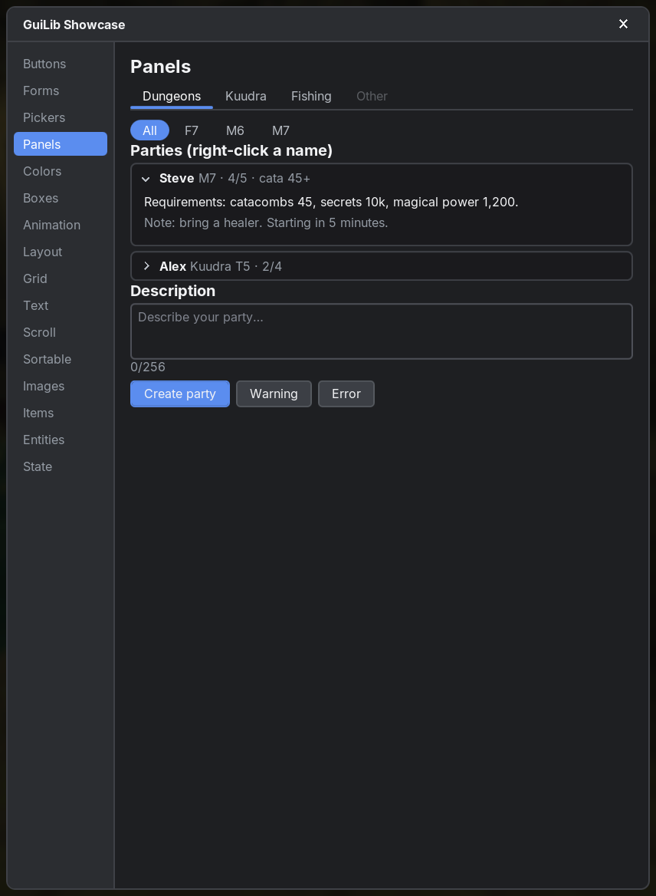
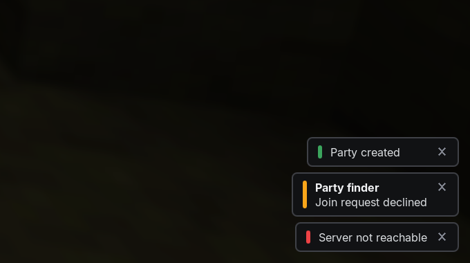
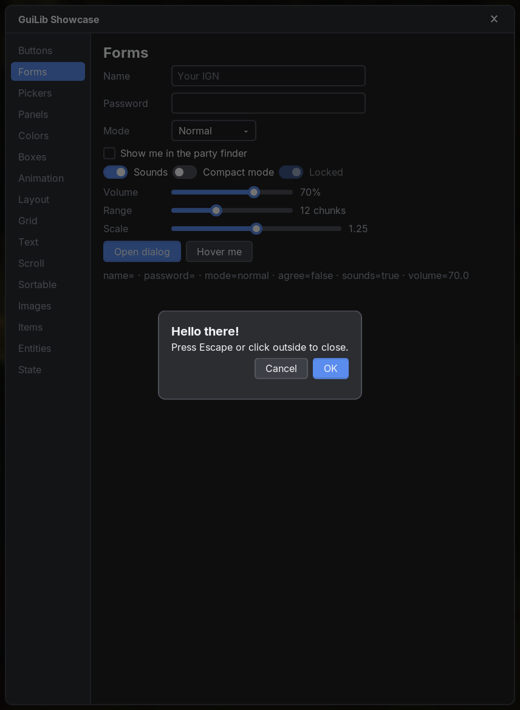
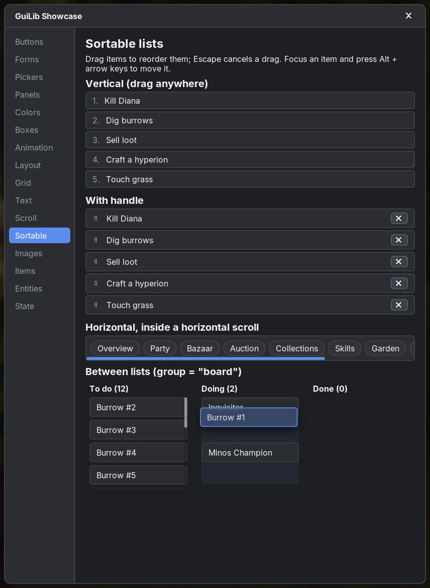

Panels & overlays
Navigation, expandable sections, popups and notifications: tabs, accordions, context menus, toasts, tooltips, modals, exit animations and sortable lists.
guilib:css/ua.css, like a browser's defaults): a button already looks like a button, a select opens a menu. Your own CSS always wins over these defaults. Add GuiLib as a dependency (see Installation) and import:import net.sbo.guilib.core.dsl.* // all tags, controls, overlays, hooks: div, button, select, modal, useToast, …
import net.sbo.guilib.core.dom.* // component, createContext, Element
import net.sbo.guilib.core.event.* // MouseEvent, KeyboardEvent, InputEvent, … (only when you name the types)
import net.sbo.guilib.fabric.* // GuiLib.open / close, text(Component), useTranslation()
#Navigation
#tabsfunction
A tab bar whose indicator slides to the active tab.
Tabs with a content lambda render the active tab's content below the bar. Without content lambdas only the bar is rendered and you render the content yourself from value.
fun NodeBuilder.tabs(
value: String?,
onChange: ((String) -> Unit)? = null,
variant: String = "underline",
tabs: TabsBuilder.() -> Unit,
className: String? = null,
id: String? = null,
key: Any? = null,
)| Parameter | Type | Default | Description |
|---|---|---|---|
value | String? | required | Active tab. |
onChange | ((String) -> Unit)? | null | The clicked tab's value. |
variant | String | "underline" | "underline" or "pills" (good for sub-categories). |
tabs | TabsBuilder.() -> Unit | required | tab(value, label, disabled = false) { content }. |
className, id, key | Standard props (see Elements). | ||
var category by useState("dungeons")
var floor by useState("all")
tabs(value = category, onChange = { category = it }) {
tab("dungeons", "Dungeons") {
tabs(value = floor, onChange = { floor = it }, variant = "pills") {
tab("all", "All"); tab("f7", "F7"); tab("m7", "M7")
}
DungeonParties(floor)
}
tab("kuudra", "Kuudra") { KuudraParties() }
tab("other", "Other", disabled = true)
}.guilib-tabs .underline .pills .guilib-tab-list .guilib-tab .active .guilib-tab-indicator .guilib-tab-panel#Expandable sections
#detailsfunction
An accordion item like HTML <details>: a clickable summary row with a chevron and a body whose height animates (also when its content changes).
Uncontrolled by default. Pass open + onToggle to control it, e.g. to keep only one item open.
fun NodeBuilder.details(
summary: String / NodeBuilder.() -> Unit,
open: Boolean? = null,
onToggle: ((Boolean) -> Unit)? = null,
defaultOpen: Boolean = false,
disabled: Boolean = false,
durationMs: Long = 200,
children: NodeBuilder.() -> Unit,
className: String? = null,
key: Any? = null,
)| Parameter | Type | Default | Description |
|---|---|---|---|
summary | String / NodeBuilder.() -> Unit | required | Text or custom content of the summary row. |
open | Boolean? | null | Controlled state; null = uncontrolled. |
onToggle | ((Boolean) -> Unit)? | null | Called with the new state. |
defaultOpen | Boolean | false | Initial state when uncontrolled. |
disabled | Boolean | false | |
durationMs | Long | 200 | Animation duration. |
children | NodeBuilder.() -> Unit | required | The body. |
className, key | Standard props (see Elements). | ||
details("Requirements") { p { +"Catacombs 45, 10k secrets" } }
// Accordion: only one open at a time
var openId by useState<String?>(null)
for (party in parties) {
details(
summary = { b { +party.leader }; span(className = "muted") { +" ${party.size}/5" } },
open = openId == party.id,
onToggle = { openId = if (it) party.id else null },
key = party.id,
) { PartyDetails(party) }
}.guilib-details .open .guilib-details-summary .guilib-details-chevron .guilib-details-title .guilib-details-content#collapsefunction
The building block of details: animates its height between 0 and the height of its content. While open, the height follows the content. Closed content is unmounted after the animation unless keepMounted.
fun NodeBuilder.collapse(
open: Boolean,
durationMs: Long = 200,
keepMounted: Boolean = false,
children: NodeBuilder.() -> Unit,
className: String? = null,
key: Any? = null,
)| Parameter | Type | Default | Description |
|---|---|---|---|
open | Boolean | required | |
durationMs | Long | 200 | |
keepMounted | Boolean | false | Keep the children (and their state) while closed. |
children | NodeBuilder.() -> Unit | required | |
className, key | Standard props (see Elements). | ||
button(onClick = { more = !more }) { +"More" }
collapse(open = more) { MoreOptions() }.guilib-collapse .open .guilib-collapse-inner#Menus
#Notifications
#useToasthook
Short messages that disappear on their own ("Party created", "Server not reachable"), stacked in the bottom right corner above everything else. A click dismisses a toast; at most 5 are shown.
Safe to call from any thread, e.g. from a network callback.
fun useToast(): Toaster
class Toaster {
fun show(message: String, kind: String = "info", title: String? = null, durationMs: Long = 3500, action: ToastAction? = null): Toast
fun info(message: String, title: String? = null, durationMs: Long = 3500, action: ToastAction? = null): Toast
fun success(message: String, title: String? = null, durationMs: Long = 3500, action: ToastAction? = null): Toast
fun warning(message: String, title: String? = null, durationMs: Long = 3500, action: ToastAction? = null): Toast
fun error(message: String, title: String? = null, durationMs: Long = 3500, action: ToastAction? = null): Toast
fun clear()
companion object { fun of(doc: Document): Toaster }
}
class Toast { fun dismiss() }
class ToastAction(val label: String, val onClick: () -> Unit)durationMs <= 0 keeps the toast until it is clicked. kind becomes a CSS class, so custom kinds can be styled.action (since 0.12.2) adds a button below the message, e.g. Undo: toast.info("Event deleted", action = ToastAction("Undo") { restore() }). Clicking it runs the lambda once and closes the toast; give such toasts a longer durationMs.
val toast = useToast()
button(onClick = {
createParty(
onSuccess = { toast.success("Party created") },
onError = { toast.error("Server not reachable", title = "Party finder") },
)
}) { +"Create party" }.guilib-toasts .guilib-toast .info .success .warning .error .leaving .guilib-toast-accent .guilib-toast-title .guilib-toast-message .guilib-toast-action .guilib-toast-close#tooltipfunction
A tooltip shown when hovering the children for delayMs. For simple text the title prop on any element works too. When it doesn't fit on its placement side it shows on the opposite side, and it is shifted to stay inside the screen (like title tips, select menus and color popovers).
fun NodeBuilder.tooltip(
text: String,
placement: String = "top",
delayMs: Long = 300,
children: NodeBuilder.() -> Unit,
className: String? = null,
key: Any? = null,
)
fun NodeBuilder.tooltip(content: NodeBuilder.() -> Unit, placement: String = "top", delayMs: Long = 300, className: String? = null, key: Any? = null, children: NodeBuilder.() -> Unit)| Parameter | Type | Default | Description |
|---|---|---|---|
text | String | required | Tooltip text (or content = { … } for rich content). |
placement | String | "top" | top, bottom, left or right. |
delayMs | Long | 300 | Hover delay. |
children | NodeBuilder.() -> Unit | required | The anchor. |
className, key | Standard props (see Elements). | ||
tooltip("Refresh the list") { button(onClick = { refresh() }) { +"⟳" } }
tooltip(content = { b { +"Hyperion" }; br(); +"§6Legendary" }, placement = "right") { item(stack) }.guilib-tooltip-anchor .guilib-tooltip#Dialogs & animation
#modalfunction
A dialog in a portal with a dimmed backdrop. Escape and (by default) a click on the backdrop call onClose.
fun NodeBuilder.modal(
open: Boolean,
onClose: (() -> Unit)? = null,
closeOnBackdropClick: Boolean = true,
children: NodeBuilder.() -> Unit,
className: String? = null,
key: Any? = null,
)| Parameter | Type | Default | Description |
|---|---|---|---|
open | Boolean | required | |
onClose | (() -> Unit)? | null | |
closeOnBackdropClick | Boolean | true | |
children | NodeBuilder.() -> Unit | required | Dialog content. |
className, key | Standard props (see Elements). | ||
modal(open = dialog, onClose = { dialog = false }) {
h3 { +"Leave party?" }
div(className = "row") {
button(onClick = { dialog = false }) { +"Cancel" }
button(className = "primary", onClick = { leave(); dialog = false }) { +"Leave" }
}
}.guilib-modal-backdrop .guilib-modal
#presencefunction
Keeps children mounted while they animate out (like Framer Motion's AnimatePresence). When visible turns false the children render once more with leaving = true and are removed after exitMs. Becoming visible again cancels the exit.
fun NodeBuilder.presence(visible: Boolean, exitMs: Long, key: Any? = null, children: NodeBuilder.(leaving: Boolean) -> Unit).panel { animation: slide-in 200ms ease-out; }
.panel.leaving { animation: slide-out 200ms ease-in forwards; }
@keyframes slide-in { from { opacity: 0; transform: translateY(-8px); } }
@keyframes slide-out { to { opacity: 0; transform: translateY(-8px); } }presence(visible = open, exitMs = 200) { leaving ->
div(className = classNames("panel", "leaving" to leaving)) { … }
}#presenceListfunction
presence for every item of a list. Items removed from items stay rendered at their old position with leaving = true for exitMs, then they are removed. New items mount normally, so their CSS animation plays.
The items are rendered straight into the parent (no wrapper element). An item that comes back during its exit is a normal item again. To let the rows below slide up, give rows a fixed height with overflow: hidden and animate height and margin to 0 in the exit keyframes. For sortableList use its exitMs parameter.
fun <T> NodeBuilder.presenceList(items: List<T>, key: (T) -> Any?, exitMs: Long, listKey: Any? = null, children: NodeBuilder.(item: T, leaving: Boolean) -> Unit)| Parameter | Type | Default | Description |
|---|---|---|---|
items | List<T> | required | |
exitMs | Long | required | How long a removed item stays (match your exit animation). |
listKey | Any? | null | Key of the list itself. |
key | Standard props (see Elements). | ||
.row { height: 16px; overflow: hidden; margin-bottom: 2px; animation: row-in 200ms ease-out; }
.row.leaving { animation: row-out 200ms ease-in forwards; pointer-events: none; }
@keyframes row-in { from { opacity: 0; height: 0; margin-bottom: 0; } }
@keyframes row-out { to { opacity: 0; height: 0; margin-bottom: 0; transform: translateX(12px); } }presenceList(parties, key = { it.id }, exitMs = 200) { party, leaving ->
div(className = classNames("row", "leaving" to leaving)) {
span { +party.leader }
button(onClick = { parties = parties - party }) { +"✕" }
}
}#Lists
#sortableListfunction
A drag-to-reorder list. Items move with transform while dragging; dropping calls onReorder with the reordered list.
A drag starts after 3 px, so clicks inside items keep working, and the release after a drag clicks nothing. With handle = true only elements with the class guilib-drag-handle start a drag (use it when items contain inputs).
Dragging near the edge of a scroll container scrolls it. Items are focusable; Alt + arrow keys move the focused item.
Lists with the same group exchange items (kanban boards): outside its list the item follows the mouse as a ghost (in a portal; it repeats className/itemClassName, so style it through those), the list under the mouse opens a gap, and the drop calls the source's onReorder without the item and the target's with it. An item can also be dropped anywhere in the element around a list that holds no other list of the group (its kanban column, even below a short or empty list); lists placed directly next to each other without a wrapper need a min-height when empty.
With exitMs > 0 removed items stay at their old position for that long with the item class .leaving (not clickable, no drag starts meanwhile), so CSS can animate them out. Items dragged into another list of the group move without an exit.
fun NodeBuilder.sortableList(
items: List<T>,
key: (T) -> Any?,
onReorder: ((List<T>) -> Unit)?,
horizontal: Boolean = false,
handle: Boolean = false,
className: String? = null,
itemClassName: String? = null,
listKey: Any? = null,
group: String? = null,
exitMs: Long = 0,
children: NodeBuilder.(item: T, dragging: Boolean) -> Unit,
)| Parameter | Type | Default | Description |
|---|---|---|---|
items | List<T> | required | |
onReorder | ((List<T>) -> Unit)? | required | The reordered list; store it in state. |
horizontal | Boolean | false | Sort along x (e.g. in a horizontal scroll row). |
handle | Boolean | false | Only .guilib-drag-handle starts a drag. |
itemClassName | String? | null | |
listKey | Any? | null | Key of the list itself. |
group | String? | null | Lists with the same group exchange items. |
exitMs | Long | 0 | How long removed items stay with .leaving (match your exit animation). |
children | NodeBuilder.(item: T, dragging: Boolean) -> Unit | required | Item content. |
key, className | Standard props (see Elements). | ||
var tasks by useState(listOf("Kill Diana", "Dig burrows", "Sell loot"))
sortableList(tasks, key = { it }, onReorder = { tasks = it }) { task, dragging ->
span(className = "grip guilib-drag-handle") { +"⠿" }
span { +task }
}
// Kanban: items move between lists of the same group
sortableList(todo, key = { it }, onReorder = { todo = it }, group = "board", className = "column") { task, _ -> span { +task } }
sortableList(done, key = { it }, onReorder = { done = it }, group = "board", className = "column") { task, _ -> span { +task } }.guilib-sortable .horizontal .handle .sorting .receiving .guilib-sortable-item .dragging .away .guilib-sortable-ghost .guilib-drag-handle